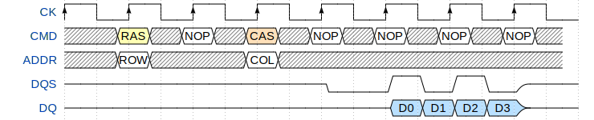
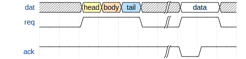

import wavedrom
svg = wavedrom.render("""{ "signal": [
{ "name": "CK", "wave": "P.......", "period": 2 },
{ "name": "CMD", "wave": "x.3x=x4x=x=x=x=x", "data": "RAS NOP CAS NOP NOP NOP NOP", "phase": 0.5 },
{ "name": "ADDR", "wave": "x.=x..=x........", "data": "ROW COL", "phase": 0.5 },
{ "name": "DQS", "wave": "z.......0.1010z." },
{ "name": "DQ", "wave": "z.........5555z.", "data": "D0 D1 D2 D3" }]}""")
svg.saveas("demo1.png")

svg = wavedrom.render("""{ "signal": [
{"name": "dat", "wave": "x.345x|=.x", "data": ["head", "body", "tail", "data"]},
{"name": "req", "wave": "0.1..0|1.0"},
{},
{"name": "ack", "wave": "1.....|01."}]}""")
svg.saveas("demo2.svg")
